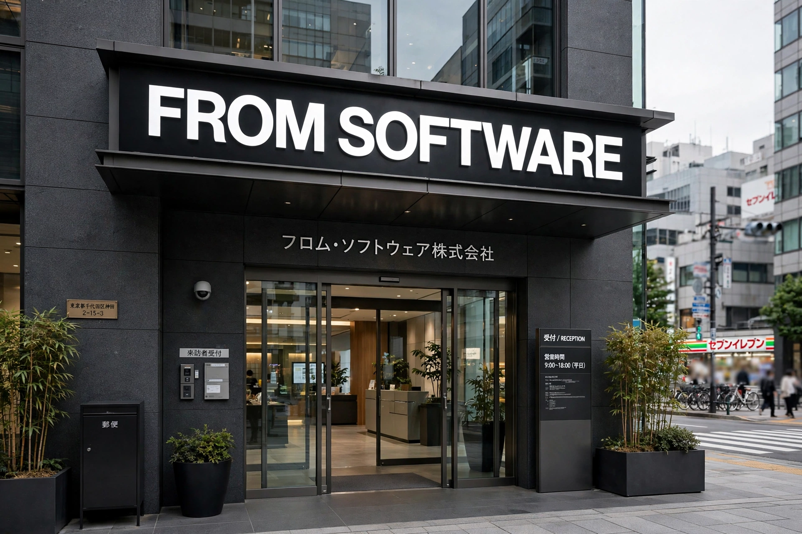

From Wikipedia, the free encyclopedia
| FromSoftware, Inc. | |
|---|---|
 | |
| Native name | 株式会社フロム・ソフトウェア |
| Industry | Video games |
| Founded | November 1, 1986 |
| Headquarters | Shinjuku, Tokyo, Japan |
| Key people | Hidetaka Miyazaki (president) |
| Parent | Kadokawa Corporation (majority); Sony Interactive Entertainment and Tencent minority stakes |
| Products | Armored Core, Souls series, Bloodborne, Sekiro, Elden Ring |
FromSoftware, Inc. is a Japanese video game developer based in Shinjuku, Tokyo. Founded in 1986 as a business software company, it entered the games industry with King's Field (1994), a first-person role-playing game for the original PlayStation. The studio became internationally prominent in the 2010s under director and later president Hidetaka Miyazaki, whose games — Demon's Souls, the Dark Souls trilogy, Bloodborne, Sekiro: Shadows Die Twice, and Elden Ring — are noted for their high difficulty, environmental storytelling, and interconnected world design.
FromSoftware was founded on November 1, 1986 by Naotoshi Zin as a developer of business applications. Its first game, King's Field, was a launch title for the PlayStation in Japan in 1994. The company subsequently became known for the Armored Core series of mecha action games, beginning in 1997, and for titles such as Echo Night and Shadow Tower.
Hidetaka Miyazaki joined the company in 2004 and directed Demon's Souls (2009) for the PlayStation 3. Though little promoted, the game became a cult hit, and its spiritual successor Dark Souls (2011) achieved major commercial and critical success, effectively creating the "Soulslike" subgenre. Dark Souls III (2016) concluded the trilogy. Bloodborne (2015), developed with Sony's Japan Studio, and the Activision-published Sekiro: Shadows Die Twice (2019), which won Game of the Year at The Game Awards 2019, further cemented the studio's reputation.
Elden Ring (2022), developed in collaboration with fantasy author George R. R. Martin, who contributed the game's mythos, became the studio's best-selling title, selling more than 25 million copies and winning numerous Game of the Year awards. Its expansion Shadow of the Erdtree followed in 2024. The studio also returned to its mecha roots with Armored Core VI: Fires of Rubicon (2023).
Kadokawa Corporation acquired a majority stake in FromSoftware in 2014. In 2022, Sony Interactive Entertainment and Tencent subsidiary Sixjoy Hong Kong acquired minority stakes of about 14% and 16% respectively, with Kadokawa retaining roughly 70%.